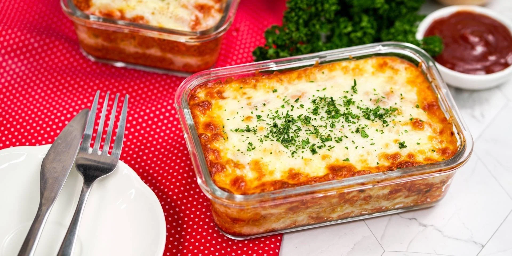
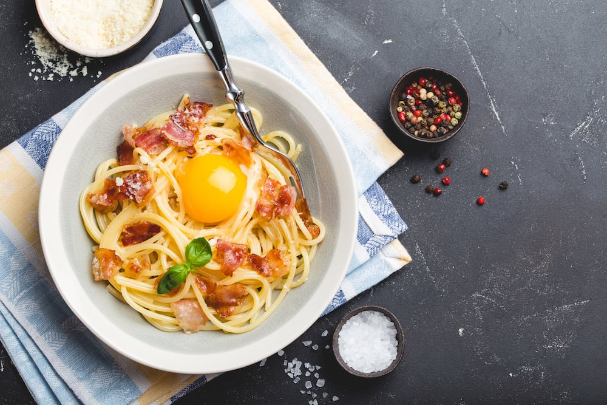

พิซซ่า (Pizza)
- ผสมแป้งขนมปังกับยีสต์ให้เข้ากัน จากนั้นก็ทำหลุมบนแป้ง เตรียมไว้
- นำนมสดไปอุ่นในไมโครเวฟพออุ่น ๆ จากนั้นใส่เกลือป่นลงไปในนมคนผสมให้เข้ากัน เทนมอุ่นลงไปในหลุมแป้ง ใช้มือกวนผสมสัก 2-3 ที ใส่น้ำมันมะกอกลงไป นวดให้เข้ากันจนแป้งไม่ติดมือ พักแป้งให้โดว์ให้ขึ้นเป็น 1 เท่า นานประมาณ 30-50 นาที
- จากนั้นนำแป้งที่โดว์มานวดอีกครั้ง แล้วรีดให้แบน หนาประมาณ 1 เซนติเมตร เตรียมไว้
- ถาดที่ใส่สำหรับอบพิซซ่าใช้ขนาด 9×9 นิ้ว ทาพิมพ์ด้วยเนย หากไม่มีเนยให้ทาด้วยน้ำมันพืช เพื่อไม่ให้แป้งติดพิมพ์ โรยหน้าด้วยมอสซาเรลล่าชีสขูดตามชอบ
- นำเข้าเตาอบใช้ไฟบน-ล่างที่อุณหภูมิ 185 องศาเซลเซียส นานประมาณ 15 นาที ตามขนาดของเตาอบ หรือใช้ไฟล่างที่อุณหภูมิ 200 องศาเซลเซียส นานประมาณ 12 นาที จากนั้นใช้ไฟบน-ล่างอีก 5 นาที เพื่อให้หน้าพิซซ่าเกรียมนิด ๆ ใช้มีดตัดเป็นชิ้น ๆ พร้อมเสิร์ฟ

ลาซานญา (Lasagna)
- แบ่งเนยเก็บไว้สองช้อนโต๊ะ เตรียมแป้งลูโดยผัดเนยที่เหลือกับแป้งสาลีเข้าด้วยกันด้วยไฟกลางจนแป้งสุก พักไว้
- เตรียมส่วนผสมผัก โดยผัดเนยที่แบ่งไว้กับหอมหัวใหญ่ 2 ช้อนโต๊ะจนมีสีออกน้ำตาล ใส่ผักโขมลงผัดให้เข้ากัน ปรุงรสด้วยเกลือ พริกไทย และลูกจันทน์ป่น ตักใส่ชามพักไว้
- เตรียมส่วนผสมหมู โดยผัดหอมหัวใหญ่ที่เหลือกับน้ำมันมะกอกจนหอม ใส่ต้นกระเทียม แครอท เซเลอรี่ลงผัดให้สุก ใส่หมูบดลงไป ยีให้เนื้อหมูแยกออกจากกัน ใส่ซอสมะเขือเทศ ไวน์แดง แป้งลูครึ่งส่วน และน้ำซุปไก่ คนให้เหนียวข้นเข้ากันดี ปรุงรสด้วยเกลือ พริกไทย ตักใส่ชามพักไว้
- ทำไวท์ซอส โดยต้มนมสดให้เดือด ใส่เกลือ แป้งลูที่เหลือ และพริกไทยคนให้เข้ากันจนข้น
- ทาเนยลงบนถาดสำหรับอบ เกลี่ยส่วนผสมหมู ส่วนผสมผัก ไวท์ซอส และแป้งลาซานญ่า เรียงสลับกันจนหมด
- โรยมอสซาเรลลาชีสให้ทั่ว ตามด้วยผงปาปริก้า นำเข้าเตาอบที่อุณหภูมิ 180 องศาเซลเซียส นานประมาณ 10 - 15 นาที

พาสต้า คาโบนาร่า (Pasta Carbonara)
- นำไข่แดงใส่ชาม เทวิปปิ้งครีม หรือ นมจืดลงไป พร้อมใส่แป้งสาลี คนผสมให้เข้ากันจนเนียนข้น
- ลวกเส้นสปาเก็ตตี้ ให้นิ่มเตรียมไว้
- ตั้งกระทะ ใส่น้ำมัน รอจนร้อนแล้ว กระเทียม หัวหอม ลงผัดจนหอม แล้วใส่เบคอนลงไปผัดจนสุก เทส่วนผสมที่เตรียมไว้แล้วปรุงรสด้วยเกลือ รอจนเดือด ปิดไฟ แล้วใส่เส้นสปาเก็ตตี้ที่ลวกไว้ลงไปคลุกให้เข้ากัน
- ตักใส่จานแล้วโรยด้วยพาเมซานชีสขูด